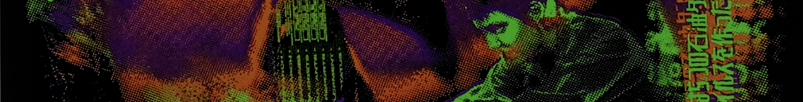

Why Internet Safety Matters
We often take the internet for granted, but there are growing concerns about privacy, exploitation, and manipulation by tech companies. The more we use these platforms, the more we become subject to the algorithms that power them, often without our knowledge or consent.
“We cannot have a society in which, if two people wish to communicate, the only way that can happen is if it’s financed by a third person who wishes to manipulate them.” – Jaron Lanier

Internet safety is important for several key reasons
1. It helps protect our privacy. The internet holds a lot of personal information (passwords, financial details, photos). Without safety measures, this information can be stolen and misused.
2. It prevents cybercrime. Hackers can use viruses, phishing, and scams to steal data or money. Internet safety helps protect against these risks.
3. It also protects children and vulnerable groups. Kids can be exposed to harmful content or online predators. Ensuring safety helps keep them secure.
4.Internet safety is also important for mental health. Too much time online can lead to addiction, anxiety, or depression. Protecting ourselves from toxic content helps maintain a healthy mindset.
5. It also keeps our financial information secure. With online shopping and banking, we need to protect our credit card and bank details from fraud.
6. For businesses, internet safety is vital to protect confidential information and avoid data breaches. It also protects intellectual property from being stolen by cybercriminals.
7. Internet safety helps prevent the spread of misinformation. False information can cause confusion, fear, and harm, so it’s important to know how to verify what we read online.
8. It also supports national security by protecting against cyberattacks that target critical infrastructure, such as hospitals or power grids.
9. Internet safety ensures we can express ourselves freely without fear of censorship or exploitation. It keeps the internet a space where people can communicate safely and ethically.
Internet safety is essential to protect our privacy, security, mental health, finances, and freedoms in the digital world.
The Internet: A Double-Edged Sword
The internet was once viewed as a tool for human connection and creativity, but over time, its underlying business model shifted. What was initially created as a platform for free communication has now turned into a tool for manipulation and surveillance, driven by advertising revenue.
In his TED Talk, Jaron Lanier outlines how tech giants like Google and Facebook have built "behavior modification empires" that manipulate our emotions and behaviors for profit. This has resulted in the rise of divisive content and the erosion of meaningful communication.
In the early days of virtual reality, the promise was clear: new ways to connect, create, and collaborate. However, as platforms became ad-supported, they began to prioritize revenue generation over user well-being.
The Dark Side: Lessons from "Hackers"
The 90s movie "Hackers" provides a vivid depiction of the dangers of surveillance, privacy violations, and manipulation by large corporations. The young hackers in the film fight against a corrupt corporation that uses technology to exploit individuals, mirroring real-world issues with today's tech companies.
Hackers teaches us that when we lose sight of privacy and personal rights in favor of corporate profit, we open ourselves to exploitation and manipulation. The movie serves as a cautionary tale, urging us to remain vigilant in protecting our digital rights.